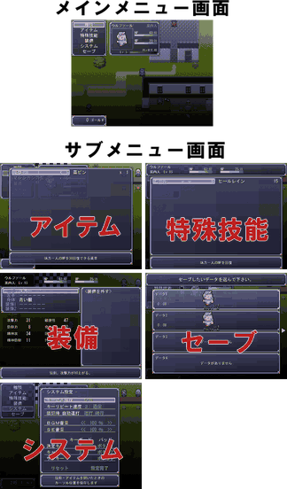
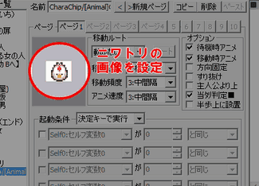
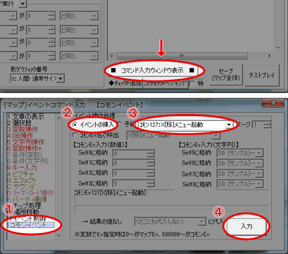
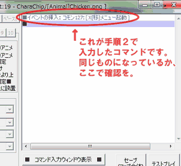
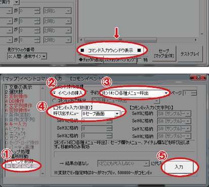
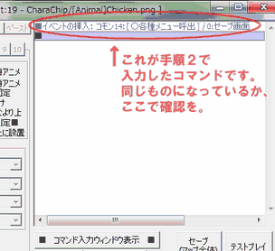

長いイベントの間に戦闘が発生する場合に、
メニュー画面を呼び出してプレイヤーに準備をさせたい場合があります。
また、特定の場所でしかセーブが出来ないダンジョンなどのマップを作る時には、
「セーブポイント」としてセーブ画面を呼び出すイベントが必要になります。
そんな時に役立つのが本トピックの内容です。
今回は、「話しかけるとメニュー画面を出してくれるイベント」と、
「話しかけるとセーブ画面を出してくれるイベント」を作成し、
メインメニューやサブメニューの起動の仕方を習得します。
| ■メインメニューとサブメニュー イベントを作成する前に、ウディタ基本システムの メインメニューとサブメニューについて説明します。 メインメニューとは、ゲーム中で「x」ボタンを押した時に表示される、 各メニューの入り口となる大元のメニューのことです。 サブメニューとは、メインメニューからさらに選択できる、 アイテム、特殊技能、装備、セーブ、システムといった 詳細設定をするメニューのことです。 メインメニューとサブメニューでは 呼び出し方が異なりますので、それぞれを解説します。 |
 |
| 【1】 イベントの作成 「サンプルマップA」の適当な場所にイベントを作成し、 ニワトリの画像を設定しておきます。 やり方が分からない場合は、「新しいイベントを作ってみたい」の 【1】～【5】を参考にしてみてください。 |
 |
| 【2】 イベントの入力 イベントウィンドウの右下にある、 「■ コマンド入力ウィンドウ表示 ■」をクリックしてください。 ①タブを「I コモンイベント」に変更し、イベント操作処理の欄を設定します。 ②ラジオボタンで「イベントの挿入」を選択し (デフォルトではここが選択されています) ③右のプルダウンリストで「ｺﾓﾝ127:X[移]メニュー起動」を選択してください。 ④最後に、ウィンドウ右下の「入力」ボタンを押します。 |
 |
| 【3】 イベントの確認 これで「話しかけるとメニュー画面を出してくれるイベント」が作れました。 イベントの内容は右の画像のようになっているでしょうか。 イベントコマンド入力ウィンドウを閉じて、 テストプレイをしてみてください。 決定キーで話しかけるとメニュー画面を 出してくれるイベントになっていれば成功です。 お疲れ様でした！ |
 |
|
今回は「起動するとセーブ画面を出してくれるイベント」を作成します。 【1】 イベントの作成 「サンプルマップA」の適当な場所にイベントを作成し、 ニワトリの画像を設定しておきます。 やり方が分からない場合は、「新しいイベントを作ってみたい」の 【1】～【5】を参考にしてみてください。 |
| 【2】 イベントの入力 イベントウィンドウの右下にある、 「■ コマンド入力ウィンドウ表示 ■」をクリックしてください。 ①タブを「I コモンイベント」に変更し、イベント操作処理の欄を設定します。 ②ラジオボタンで「イベントの挿入」を選択し (デフォルトではここが選択されています) ③右のプルダウンリストで「ｺﾓﾝ14:○各種メニュー呼出」を選択してください。 ④セーブ画面を呼び出す処理を入れます。【コモンEv入力(数値)】の欄で、 「呼び出すメニュー」を「0:セーブ画面」にしてください。 ⑤最後に、ウィンドウ右下の「入力」ボタンを押します。 |
 |
| 【3】 イベントの確認 これで「話しかけるとセーブ画面を出してくれるイベント」が作れました。 イベントの内容は右の画像のようになっているでしょうか。 イベントコマンド入力ウィンドウを閉じて、 テストプレイをしてみてください。 決定キーで話しかけるとセーブ画面を 出してくれるイベントになっていれば成功です。 お疲れ様でした！ |
 |
|
■呼び出すことのできるサブメニューについて 手順ではセーブ画面を呼び出しましたが、 「呼び出すメニュー」の数値を変えることで 他のサブメニューを呼び出すことができます。 呼び出すことのできるサブメニューは下記の通りです。 0 : セーブ画面 -1 : ロード画面 1 : アイテム画面 2 : 技能画面 3 : 装備画面 4 : システム画面 |
＜執筆者：ウディタ公式ガイド執筆コミュ。＞